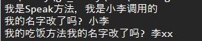
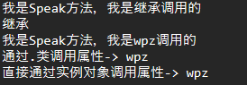

go基础语法笔记
第一个程序
1.2.3.4.5.6.7.8.9.10.11.package main//每个go程序都含有一个保命import 'fmt'//字符串格式化的一个包func main(){//go语言执行的主函数,一个程序执行其实就是这 fmt.Println("hello word");//输出一段换行的文字}//go语言是强类型语言，编译型语言//go编译程序: go build 编译后的文件名.exe 编译的文件名.go//还可以编译全部的程序: go build *.go//不编译运行: go run *.go或者文件名//go install将编译后的.exe文件下载到bin目录下//go env 查看go的环境变量变量
1.2.3.4.5.6.7.8.9.10.11.12.13.14.15.//变量定义: var//常量定义: const //第一种变量定义方式: 先定义再赋值//var 变量名 类型//变量名 = 值 //第二种定义时直接赋值//var 变量名 类型 = 值 //第三种: 常用自动推导//变量名 := 值，会自动推导变量的类型 //同时定义//i,j := 1,2自增
1.2.//go语言里面只有一个1++和i--，没有--i和++i//并且这种语句必须独占一行指针
1.2.3.4.//定义指针//方法1: name := "小李" prt := &name//方法2: ptr := new(string) *ptr = "小李"//指针可以作为函数返回值返回go语言里面没有的语法
1. 三木运算符
2. ++i和--i
3. go中的if和for都不用使用()包裹,if里面必须时false或者true,if必须要加{}
4. 不支持地址加减
字符串
1.2.3.//go里面要使用换行字符串使用反引号`//得到字符串的长度使用len方法 len(字符串变量名)//字符串拼接使用+切片
定长切片
1.2.3.4.5.6.7.8.9.10.11.12.13.//定义 切片名 := [长度]类型{内容}(最常用)//var 切片名 = [长度]类型{内容}//var 切片名 [长度]类型 = [长度]类型{内容} //遍历//nums := [10]int{1,2,3,4,5}//for i:=0;i < len(nums);i++ { fmt.Println("i:",i,"value:",nums[i])//}//第二种//for key,value := range nums{ fmt.Println("key=",key,"value=",value)//}不定长切片
1.2.3.//定义 切片名 := []类型{内容}//切片追加内容: append(追加的切片名,内容)不改变原切片//切片容量: cap(切片名)当向切片里面添加元素时，如果容量不够会自动添加原来切片的容量值复制引用切片内容
1.2.3.4.5.6.7.8.9.10.//首先声明这种方法只是引用，所以是一种浅拷贝的方式，会影响到原来的切片//ages := []int{18,19,20,21}//copyAges := ages[起始下标:结束下标加1]左闭右开//当想重头克隆到某一个位置,则左边数字可省略不写//copyAges := ages[:结束位置加1]//当想重某一个位置克隆至切片结尾处,则第二位数可以省略//copyAges := ages[起始位置:]//当想完整克隆整个切片则省略两个数字即可//copyAges := ages[:]//改变copyAges中的内容也间接改变了ages里面的内容
1.2.3.4.5.6.//声明定容量的空切片//nums = make([]int,切片长度,切片容量)切片容量可省略，那默认就是切片长度//深度克隆切片//nums := []int{1,2,3,4,5,6,7}//copy(copyNums,nums[:])完整克隆整个//其余的克隆一段和浅克隆一致,修改copyNums里面的内容不会改变nums的map
1.2.3.4.5.6.7.8.9.10.11.12.13.14.//声明 var idNames map[int]string key的类型为int,value类型为string//给与map赋值前一定要先给与空间//给与空间 idNames = make(map[int]string,10)这个10可以省略不写，表示无限长度，但是如果是定长的还是写上好//声明便给与空间idNames := make(map[int]string,10)//赋值idNames[0]="小李"//idNames[1]="喷子"//遍历//for key,value := range idNames{ //fmt.Println("key=",key,",value=",value)//}//判断map里面的某个key是否存在//value,ok := idNames[10]//如果ok等于false表示不存在该值,如果map里面的内容是int型的就返回0，如果是string型的就返回空,如果是布尔型就是false,如果存该key ok就是true,可以进行判断存在某个属性就操作//删除map中的某个字段: delete(idNames,0)删除idNames的key为0的字段函数
1.2.3.//go里面的函数可返回多个值,返回值写在()和{}之间，多个返回值用()包裹和逗号隔开//如果是一个返回值不需要写名字和(),写上类型就好了//当变量和返回值名字是一样的时候，直接写个return会自动将变量值返回import(引入相应包)
使用和相关代码
1.2.3.4.5.6.//每个文件夹同级文件只能包含一个包名//通过import ”包路径“就可以使用包里面的方法，使用包名.方法名执行//还可以重命名包的名字，在引用路径眼添加新的包名，就可以通过新的报名.方法名调用相关方法//通过.可以引入包里面的所有的方法，可以直接调用函数名，不用加包名和点//有时我们引入了包但是不使用go就会报错，所以我们可以在前面加一个_就可以不调用也不报错//注意报名引入调用的方法必须首字母大写
1.2.3.4.5.6.7.8.9.10.11.12.13.14.15.16.17.18.19.20.21.22.23.24.25.26.27.//reduce.gopackage subfunc Reduce(a int,b int) int{ return a - b;} //add.gopackage subfunc Add(a int,b int) int{ return a + b;}//main.gopackage mainimport ( "fmt" "import/sub"//正常引入一个包,使用: sub.Reduce(10,5) SUB "import/sub"//给包起一个别名，调用时通过SUB.Add(10,20) . "import/sub"//引入包里面所有的方法,不带报名和点执行,使用: Add(5,10) _ "import/sub"//不使用也不会报错,只执行包里面的init方法，如果有多个按照先后顺序执行)func main(){ res := sub.Add(1,2) red := sub.Reduce(10,5) res1 := SUB.Add(10,20); res2 := Reduce(20,10) fmt.Printf("red=%d,res=%d,res1=%d,res2=%d",red,res,res1,res2)}结果
switch
1.2.3.//switch和其它语言使用的方法都差不多//唯一不同的是它不用break结束//如果想要继续向下执行使用关键字fullthrough标签
1.2.3.4.//含有三种 goto continue break//goto是跳出当前循环，重新从初始化开始执行，如果没有一个退出机制会造成死循环//continue是跳出当前循环继续进行下次//break结束当前循环,不会再继续向下执行枚举
1.2.3.4.5.6.7.8.9.10.11.12.13.14.//go里面其实是没有枚举这个东西的//它是通过const和iota(常量累加器)实现的// const ( //x = itoa x=0 //x1 = iota x1=1 //x2 = iota x2=2 //x3 如果没写会像上面一样,那x3=3 //x4 x4=4//)//iota从0开始，每换一行加1//常量组不赋值，默认与上一个表达式相同，//同一行出现多个iota，那它们的值是相等的//每个iota都是独立的,遇到const会重新赋值0//这种也可以是一个表达式进行运算x = iota + n结构体
1.2.3.4.5.6.7.8.9.10.11.12.13.14.15.16.17.18.19.20.21.22.23.//声明结构体//type 结构体名称 struct{//里面的字段//} //例type Student strcut{ name string age int sex string score double}//使用xl := Student{ name: "小李", age: 18, sex: "男", score: "100",}//如果大括号没有和最后一个字段是同一行，那么最后一个必须再加一个逗号//如果结构体的每一个属性都有值的话，可以省略属性名//如果只有部门属性含有属性值就必需要带上属性名//赋值和修改都可以通过.来完成 例: xl.name="无"init方法
1.2.//每个包里面都又init方法(你写了就有),当你引入这个包时，首先会执行init方法，如果是多个就按照顺序//init方法不能在包里面给用户调用defer
1.2.3.//defer是延迟执行,可用于修饰语句方法//可以确保这条语句在当前栈退出前执行//多个defer按照先入后出的顺序类
1.2.3.4.5.6.7.8.9.10.11.12.//go里面并没有像其他语言有class啥的,是通过结构体来实现的//代码type Human struct{ name string age int hobby string}func (this Human)Speak() { //这个this其实就是Human实例出来的，方法里面可以直接通过this来获取对象中的属性值 //但是当Human不是一个指针是，操作的是一个拷贝的结果，并不会操作实例对象 fmt.Println("name=",this.name)}代码
1.2.3.4.5.6.7.8.9.10.11.12.13.14.15.16.17.18.19.20.21.22.23.24.25.26.package mainimport "fmt"type Human struct { name string age int hobby string}func (this Human)Speak(){ fmt.Println("我是Speak方法，我是",this.name,"调用的"); this.name = "李xx"}func (this *Human)Eat(){ fmt.Printf("我的吃饭方法"); this.name = "李xx";}func main(){ lxh := Human{ name: "小李", age: 18, hobby: "敲代码，追剧，逛淘宝", } lxh.Speak() fmt.Println("我的名字改了吗?",lxh.name) lxh.Eat(); fmt.Println("我的名字改了吗?",lxh.name)}效果
继承
1.2.3.4.5.6.7.8.9.10.11.12.13.14.15.16.17.18.19.20.21.22.23.//go里面的继承也是结构体继承另一个结构体//代码type Student struct{ human Human score int}//通过Student实例出来的对象可以通过.homan.Human里面的属性和方法 lxh := Student{ human: Human{ name: "小李“, age: 18, hobby: "敲代码,追剧,逛淘宝", }, score: 100, }//然后就可以通过lxh.human.使用了，还可以调用human.Speak方法//有时不想把继承的属性放在自己的属性下面,就不用再写属性名了,如下type Student struct{ Human score int}//就是上面那个lxh实例对象就可以直接lxh.name//如果怕自己身上的属性和父类身上的属性一样还可以通过lxh.Human.name，这个Human会隐式地帮创建代码
1.2.3.4.5.6.7.8.9.10.11.12.13.14.15.16.17.18.19.20.21.22.23.24.25.26.27.28.29.30.31.32.33.34.35.36.37.38.39.40.41.42.package mainimport "fmt"type Human struct { name string age int hobby string}func (this Human)Speak(){ fmt.Println("我是Speak方法，我是",this.name,"调用的"); this.name = "李xx"}func (this *Human)Eat(){ fmt.Printf("我的吃饭方法"); this.name = "李xx";}type Student struct{ human Human score int}type Theach struct{ Human subject string}func main(){ lxh := Student{ human: Human{ name: "继承", age: 18, hobby: "熬夜,追剧，逛淘宝", }, score: 100, } wpz := Theach{} wpz.name = "wpz" wpz.age = 45 wpz.hobby = "看姐姐" lxh.human.Speak() fmt.Println(lxh.human.name) wpz.Speak(); fmt.Println("通过.类调用属性->",wpz.Human.name) fmt.Println("直接通过实例对象调用属性->",wpz.name)}效果
访问权限
在其他的包里面，类里面的成员只有大写的才能被访问
interface
代码
1.2.3.4.5.var inter interface{}str := "小李"inter = str;ivalue,ok := inter.(int)//判断是否为int类型type : inter.(type)//获得inter的类型,这玩意儿必须要配合switch一起使用多态
1.2.3.4.5.6.7.8.9.10.11.12.13.14.15.16.17.18.19.type IAttack interface{ Attack()//这里面所有的方法都要实现才能实现多态和使用}func (this *LowerLevel)Attack(){ fm.Println("实现的方法，名字",this.name)}func main(){ type LowerLevel struct{ name string level int}lower := LowerLevel{ name: "小李", level: 0}var player Attackplayer = &lower;player.Attack();//实现的方法，名字小李}